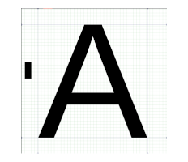

Secure1 photo of the author from 2025
The company's core product relied upon refactoring the automotive client OEM's source code in order to make it much more efficient to generate software updates. Sometimes their product could reduce update times by a factor of 10 compared to the default technique of using LZMA (i.e. successor to zip) compression.
I invented an extremely efficient technique to greatly improve the efficiency of their initial refactoring software by combining the SRCML compiler AST output in XML format with the Python Beautiful Soup library in order to generate the refactored source code.
And I invented a technique (US patent pending) to greatly reduce RAM usage when the embedded software generates FLASH files by modifying the internals of the ubiquitous C memcpy function by incorporating Posix-like buffered I/O when memcpy is used to sequentially write to FLASH. The RAM savings enables usage of larger "chunks" that enables higher compression ratios for legacy system boards with small amounts of RAM, e.g. less than 256 KB. Sometimes compression ratios could be improved by 25%.
I reverse engineered the X64 object code of the Linux kernel module libc in order to modify the internals of the exec functions, where these functions are used in stack smashing attacks, but without changing the addresses of any of the libc exports.
Inserting the extra security functionality into these functions necessitated a slight increase in their sizes, therefore it was quite challenging not to change the addresses of any of the other libc functions.
I implemented the project in Python using the Zydis disassembler Python library.
Note that every X64 Linux release and distro will likely have a slightly different libc object code implementation.
I implemented C cryptography functions in Javascript web assembly (WASM). _WASM_object code is much faster and much more difficult to debug than Javascript. Because this project was intended for the banking industry, in the future we could write a WASM obfuscator that would greatly increase the difficulty of debugging.
I implemented the project by using Clang's wasm32 target.
I architected and implemented a software design for efficient software updates of embedded systems using mini-bsdiff delta encoding.
I invented EU Patent EP3680773A1, a mini-bsdiff patch implementation for small FLASH memory systems where the FLASH is not big enough to temporarily hold both the original version "A" and new version "B" of the object code. Normally bsdiff requires both versions be available when applying the patch.
I experimented with Google's Courgette improvement to bsdiff, but it required a relatively large amount of RAM on the target device to support a linker. The large RAM is not typically available on legacy boards used in the automotive industry. I developed an algorithm that dispensed with the need for a linker.
I experimented with techniques for using source code patching instead of bsdiff object patching. The Elektrobit management refused to believe that it was commercially feasible to have access to an OEM's source code. I switched jobs to Aurora Labs above because I believed that source code patching is a better solution.
I was the company's Misra C "enforcer". While I understood the safety rationale and the legal requirements for Misra C, I found many of their rules to be unnecessarily pedantic. I developed Jinja2 preprocessing utilities that worked around these pedantic rules, but that still generated valid Misra C code.
I focused on obfuscation, i.e. anti-reverse engineering, of their smartphone (i.e. Android and iPhone) client player, by selecting a C/C++ obfuscating compiler and by building home brew utilities. I selected the WhiteCryption compiler originally built by InterTrust and acquired by Zimperium in 2021 after I left. When I first selected the product WhiteCryption was still in the beta stage. I worked very closely with the WhiteCryption development team - mainly specifying new features and testing existing ones. Previously I worked on an in-house obfuscation compiler at NDS, which I considered far beyond the manpower resources we had at Viaccess-Orca. After I left Viaccess, they switched to the French Quarkslab compiler partially because Viaccess HQ is in France.
One of my most important utilities was designing an ELF Dynamic Share Object DSO (i.e. an
so file) which had no export table which ostensibly eliminates the usefulness of a
DSO. I designed a low-level mechanism to load an encrypted export table relying upon ELF's
special init section which executes before the DSO is activated. The export table
is one of the major attack surfaces in a DSO.
I worked with the 3rd party software supplier of the video codec in order to substantially bolster the security of their product which proved to be a major potential security hole in our system. The challenge was that most of their customers did not require the security that we did, and for practical commercial reasons they were not willing to make a separate build for us. I managed to architect an optional security plugin for them that caused minimal changes to their system, and caused zero interference to their other customers who chose not to use the plugin.
Initially the movie studios insisted that smartphones could not be rooted because it made them considerable more difficult to debug, so I developed a fuzzy logic-like mechanism to detect rootedness. The problem was that less expensive Android phones from Asia, that were flooding the market, were rooted by default because it saved the manufacturer a few hours of licensing work from Google who controlled AOSP (the Android Open Source Project). Therefore security had to be moved from the client to the content servers. For example a license that license that played 100 hours of content a week was suspect, or a license that played content simultaneously from different geographic locations was suspect.
The company sold their Internet TV Cybersecurity business unit to Viaccess-Orca (2014) above.
The company was a failed competitor to Waze.
I developed algorithms to improve traffic throughput in traffic jams taking advantage of expected traffic trends according to history of the day of the week and expected events.
I designed live experiments using AWS simulations to optimize results. Co-donated work with a mathematical consultant specializing in optimization algorithms for a huge number of variables.
Theoretical algorithm experiments were conducted on a simulator of Tokyo traffic.
The company's product was a novel dry test kit for MRSA using PCR (a DNA amplification device). MRSA is a lethal strain of staphylococcus bacteria. It thrives in hospitals where it is the major iatrogenic killer of immunologically compromised patients. Therefore it is critically important that hospitals identify carriers among both patients and hospital staff as soon as they are infected. Most people who are infected with MRSA carry it in their nasal passages. Most interesting such a person, even an immunologically compromised one, can still live until 120. However if an immunogically comprised person touches his nose, and afterwards touches an open wound then he is in danger of death. Prior to PCR technology, it took a laboratory about 48 hours to identify the disease by growing a culture in a "gold standard" Petri dish, but PCR technology can make the identification within 2 hours.
Before joining the company I had zero background in biology, micro-biology, genetics, or biochemistry. When I arrived the company was in imminent danger of closing down their PCR business unit because their initial FDA trials completely failed that they had spent about $500K to prepare by taking 800 samples from a few Israeli hospitals. The owner was "pulling his hair out" because he felt that his science was 100% correct. First he hired Tzachi Bar to consult, the inventor of PCR mathematical algorithms used in all PCR devices at that time world wide, but Bar could not help him. I happened to be the owner's neighbor. He knew that I was a computer scientist, so he took his final chance with me. Within 3 months I made a number of discoveries that validated the owner's science and enabled them to pass the FDA trials. In spite of my technical success, for commercial reasons beyond the scope of my short article, they were forced to close down their PCR business unit; therefore my threshold algorithm was never patented.
Initially Bar and the company's chief microbiologist gave me a 2 week crash course in the fields of microbiology and genetics that they felt I would need for my work.
My first task was to generate amplified graphs of all 800 samples, and to study them. Note that every sample had a PCR result, and an associated "gold standard" Petri dish result.
My second task was to carefully read the manual of the PCR device. I noted that the company's junior biochemist who was responsible for administering the hospital tests had used an incorrect protocol for configuring the PCR devices. The 3 control samples that every batch contains were placed in incorrect test tube slots. Therefore all test results were nonsensical!
Even though the samples had been thrown away weeks before I arrived, fortunately they had saved the raw data from the PCR devices, that allowed me to reconstruct the Bar-Tichopad algorithm. The new results were better, but still hardly good enough for the FDA that required 80% accuracy.
I noted that tests from the pure laboratory colonies of MRSA, with extremely high concentrations never to be encountered in a patient sample, all failed. This indicated to me that there was a flaw in the industry standard Bar-Tichopad algorithm.
And I noted that many tests with negative PCR results, in spite of the positive Petri results, had random graphs instead of the smooth bioassay sigmoidal shaped curve of the logistic function that Bar-Tichopad expected. After discussing the matter with Bar and the senior biochemist, this indicated that the graphs were statistically noisy due to PCR inhibition. Therefore the company's preliminary chemistry did not yet filter out nasal impurities that mature chemistry was supposed to do. Maybe we had to "throw in the towel", i.e. to give up?
So I put on my "thinking cap", and discovered a completely new algorithm that was much better than the Bar-Tsichopad algorithm.
I discovered a much more accurate and simple way to normalize the bioassay curve and to remove systematic noise, by noting that the "systematic" noise and the linear rise in the signal of the negative control sample precisely matched the patient samples (from the same batch). Therefore my simple normalization solution was to subtract the negative control sample from the patient samples.
Both Bar and the senior biochemist agreed with me that inhibition never increases the PCR signal. Therefore I used an alternative AI threshold test, instead of the Bar-Tichopad test that was based upon advanced mathematical functional analysis to calculate the Ct of the assay.
I split the patient samples in half. For the control half, I used the single maximum signal from each sample. I recorded minimum PCR signal that indicated a positive Petri result. And similarly I recorded the maximum PCR signal indicated a negative Petri result.
I used the other half of the patient samples to test my new threshold algorithm. My predictions were 95% accurate in spite of the high degree of inhibition found in the preliminary chemistry!
My threshold algorithm won a MRSA "shoot out" at the world famous UK St Georges medical school hospital against competing PCR kits from the huge international pharmaceutical companies!
Most of my work at NDS was doing software security research including occasional code security audits.
I was one of the first security researchers in the world to prove that the ubiquitous virtual machine packages, e.g. VMWare and VirtualBox, could break simple DRM protection schemes like date restrictions or replay count.
I showed how X64 virtualization hardware could be used together with QEMU to break the software random number generator
(RNG). This was a very critical attack because the fundamental security assumption was that each
client PC had a world wide unique cryptrographic "nonce". But if confederate clients could share
their nonces then a single license could be shared by all members of the confederacy. At that
time, c. 2007, the cycle counter instruction RDTSC was easily subverted by the
virtualization technology. After I left the company, since 2012 the CPU has a hardware RNG
instruction RDRAND which is a much safer instruction from the perspective of
security.
I invited outside security researchers to give lectures and seminars to in-house developers on state-of-the-art security techniques. Based upon these lectures I developed an obfuscated FORTH-like compiler that was extremely difficult to reverse engineer.
In 2007 NDS was invited by the Chinese government TV system to protect the 2008 Beijing Olympics TV feed. I "almost" won the contract. The Chinese government did not want Microsoft to be involved in the bidding because nearly 100% of servers and client PCs had stolen operating system licenses which could easily be revealed when Microsoft installed the protection software. At time the Olympic TV feed was owned by Microsoft company MSNBC. Eventually Microsoft agreed not to sue China for the stolen operating system licenses, and they offered the protection package for free so they won the contract.
The Israeli cable TV operators had their feed stolen by Israeli expats in the US, and more massively in the Palestinian areas. I showed how to it was possible to easily technically stop these thefts. For reasons that are still not clear to me, the operators showed no interest in stopping the thefts.
My first job at NDS was as a contractor. I built a tester and simulator for the NDS satellite software. I designed a DSL (domain specific language) in TCL to do this task. After my analysis of their software, I concluded that there were critical flaws in the design. I was quite knowledgeable in VAX/VMS O/S internals. The junior VP in charge of the project refused to believe that a mere QA guy could have such knowledge, so I built a graduated test program that blew his (virtual) satellite out of the sky. Afterwards my software was installed on every developer's desktop. Before checking in software into their version control system, it became standard operating procedure to run a 10 minute test prior to check-in.
I worked with the QA department to analyze their bug reports, and concluded that nearly 50% of their software effort was bug fixes. And they had more than 1000 software developers! I worked with the QA department in order to implement a program to greatly reduce bugs. I recall that their biggest problem was lazy software builds that often contained tens of thousands of warnings. My most important improvement was insisting on zero warnings, or adding explicit compiler approval of any warning to be explicitly allowed.
I designed an extremely efficient network testing laboratory.
By selecting 24-port programmable layer-2 switches for each of the PC's 4x100 MB Ethernet ports, each PC was able to control 96 cable modems during low speed ping tests, whereas previously each PC could only control 4 modems (i.e. one per Ethernet port), which resulted in massive (24x) cost savings through the reduction of PCs and their associated electrical infrastructure, floor space, and air conditioning.
For high speed testing at 8 MB per modem, each PC's Ethernet port could only support 12 modems; but the programmable switches could be dynamically configured to quickly open and close ports.
I Implemented automated control of the lab in TCL.
Instead of implementing speed tests with Cisco's network utilities which relied upon a binary search algorithm, initially I wrote a program to implement a Fibonacci search which was a significant improvement. Subsequently I wrote a steepest descent search which was 10x more efficient!
I invented a software system that allowed the blind to "see" and to understand computer images, especially maps and mathematical functions, using a
a. standard PC or smartphone web browser
b. the device's builtin speaker
c. ideally a consumer grade graphics tablet and stylus (e.g. Wacom Bamboo ~$50)
d. although optionally, but less preferably, with the device's builtin mouse
The software heavily relied upon the builtin standard vector graphics (SVG) capability of all modern web browsers (since 1999).
a. SVG is an XML variant.
b. SVG returns the postion and color at the cursor.
c. Unlike JPG or PNG pixelated images, SVG has the ability to smoothly zoom in or zoom out of vector images.
The basic concept can be understood by using an example image of a circle.
a. Let the display be black, except for the perimeter of the circle which is a few pixels wide and which is colored white.
b. In the simple case where the user's stylus hovers over a white pixel, a sound is played, but hovering over a black pixel yields no sound.
c. Blind users prefer a graphics tablet to a mouse because blind users still have hand-eye (or actually mind-eye) coordination, so they can easy navigate around the tablet. Mice have the problem that the cursor gets stuck at the edge of the display when you scroll beyond the edge. It is possible to provide sonic cues to ameliorate this problem, but using a tablet and stylus is much easier.
d. Divide the screen into a grid of 96x96 rectangles, or equivalently 8x8 12-tone chromatic octaves. Let the horizontal (x) axis be represented by a piano, and the vertical (y) axis be represented by a flute. Instead of playing the same sound for all white pixel positions, play the xy note combination in the grid position where the cursor is located.
e. If we would use two intersecting circles, say one white and blue, we could use different instrument combinations to represent the colors, and/or we could use the keyboard or click on the stylus to query which circle we are touching, where the application will provide a text-to-speech response.
Images need to be prepared offline. But in the case of maps, most of which are already designed using XML, it is possible to programmatically automate their preparation.
The company built local wireless cable networking equipment. I did similar tasks for Vyyo. See Vyyo (2004) above and Vyyo (2000) below.
The company's FPGA hardware was streamlined to handle calibrating/aiming the optical equipment. It had no CPU, and minimal configuration I/O ports.
I selected an external board in order to implemented a basic SNMP agent.
I built a basic HTTP SNMP NMS server.
See the tasks that I did for the successor company Vyyo (above).
The company was a pioneer in the 3D printing industry, originally known as "stereo lithography" or "solid ground curing". Their "Solider" device weighed 4.5 ton and was the size of and was shipped in a half-size container. The parts were made from a polymer that was heated into a liquid, and the holes were filled with liquid wax. When a part cooled it became solid, while the wax melts in hot water and drains away.
I developed a VAX/VMS printer driver by considering each layer of the printer output as if it were a separate page.
Invented a lightweight source control system by taking advantage of the VAX/VMS DCL file generation and logical file name (i.e. alias) features.
I developed a DSL for designing printer subassemblies by taking advantage of a VAX/VMS command line utility for defining command "ensembles".
I architected a Motif user interface (UX) that manipulated the ensembles.
I was the company's VAX/VMS system admin.
At that time, 1989, speech-to-text systems were not yet technically feasible or else exorbitantly expensive.
Our hardware solution was based upon attaching a telescopically enhanced light pen to a then ubiquitous CRT display, where the light pen's select button was replaced with a sip-and-puff accessibility switch. Normally a light pen needed to be ~1 cm from the display, but with our military grade optical enhancement it could be used ~80 cm away.
My initial software invention overlaid half of the display with a virtual keyboard, where the light pen was used to select a key. The final solution used an "expert mode" where a virtual hidden keyboard covered 100% of the display, but a key popped up only when the light pen hovered over an individual key.
The first user of the device was Shulamit Gabai who was stricken with polio in all of her limbs by the Or Akiva disaster where sewage leaked into the clean water system. She was able to use the device to type 30 characters per minute, and thus was able to become an editor for a book publisher.
For the new learning experience, I wrote the program in Prolog.
This domain specific language (DSL) annotates an Auto-CAD leather sewing pattern with "road signs". The signs are associated with sewing commands that must be followed in real-time.
Since leather is a natural fabric, no pieces are identical with respect to size, thickness, and color. An expert human sewing machine operator will take these differences into account. Therefore the robot has a live video feed.
A high speed sewing robot can execute a few thousand stitches per minute. On account of torque it takes a few seconds to change speed. Making mistakes may cause the machine to make hundreds of unnecessary stitches which could seriously damage the (potentially expensive) fabric.
Among other things the signs specify minimum and maximum speeds, the sizes of the minimum and maximum overlapping regions, the pattern matching algorithm to be used depending upon the texture and color of the leather, etc.
For example speed is a function of the angular changes, and the complexity of the of the matching algorithm.
I was the first public interest intervenor in the history of the OEB to be awarded costs - at the suggestion of the OEB!
Due to intense political pressure from the mineral smelting industry who relied upon subsidized electricity prices, the Ontario government forced the the public electric utility, then called Ontario Hydro, to withdraw their case after the hearings had already begun. I became the primary intervenor at the hearings to present the case for marginal cost pricing.
I published a full page op-ed about the hearings in Canada's then newspaper of record The Globe and Mail.
I initially learned about the hearings from a course in my MBA program (1976) when I complained to the Ontario Hydro economic team (beside the Univ campus) about the mediocre B grade my professor gave me on my term paper.
I had legal standing because I paid an electric bill of about $25 a month!
This job was a formative learning experience for me that subsequently effected my whole life because I learned that a single individual could effectively stand up to the corruption of large business and government. With perfect hindsight, it was clearly a case of Divine intervention (Hebrew: Hashgacha Pratit). Subsequently in Israel I became involved in community service projects, described below, where I successfully stood my ground against government corruption.
Note the public domain copyright at the beginning of this document.
Two commonly used non-cryptographic checksum algorithms are Adler-32 and CRC-32. Adler-32 is trivial and much faster to calculate on account of the simplicity of its main loop.
#include <assert.h>
#include <stdint.h>
__attribute__((__pure__))
uint32_t original_adler32(const int32_t n, const uint8_t *restrict arr)
{
static const int32_t MAX_N = 5803L;
if (n == 0) return 0;
assert(n > 0 && n <= MAX_N);
assert(arr != 0);
uint32_t sum = 0;
// efficient main loop
for(int32_t i = 0; i < n; ++i) { sum += arr[i] * (i+1); }
return sum;
}Unlike CRC-32, the major flaw with Adler-32 is its lack of "spread" in the domain of
sum. Clearly short messages will have too small a spread, which results in many
collisions. However it is very easy to correct this problem by using a constant multiplier
k which is a function of n. We still retain the speed and simplicity
of the original algorithm. This algorithm is quite useful as an extremely fast
non-cryptographic hash
function.
#include <assert.h>
#include <stdint.h>
uint32_t ayb_adler32(const int32_t n, int32_t * k_ptr, const uint8_t *restrict arr)
{
// constants calculated off-line
static const int32_t MAX_K = 16843009L;
static const int32_t MAX_N = 5803L;
if (n == 0) return 0;
assert(n > 0 && n <= MAX_N);
assert(arr != 0);
int32_t k = 0;
if (k_ptr != 0) {
k = *k_ptr;
assert(k >= 0 && k <= MAX_K);
}
if (k == 0) {
// If the caller does not pass a non-zero value for `k` then dynamically calculate the
// optimal value for him, and provide him the opportunity that the next time he makes a
// call with the same message length then he can recall this value, and thus avoid
// repeating the calculation.
// Calculate the optimal multiplier that gives the maximum spread.
// Recall that the sum of an arithmetic sequence is: n*(n+1)/2.
// In the extreme case every element of the array is 255,
// therefore the largest possible sum is: (n*(n+1)/2)*255*k <= 0xffffffff
k = 0xffffffffUL / ((((uint32_t)n*((uint32_t)n+1UL))/2UL)*255UL);
if (k_ptr != 0) { *k_ptr = k; } // return optimal `k`
}
uint32_t sum = 0;
// main loop is exactly the same as the original
for(int32_t i = 0; i < n; ++i) { sum += arr[i] * (i+1); }
return sum * k;
}The following are 2 major improvements:
uint32_t array which speeds up the calculation by a factor of
4This algorithm wraps a 32-bit number with a 64-bit key and a pseudo-random 32-bit number; and
where the ALU can process 128-bit numbers then we can wrap a 64-bit number with a 128-bit key
and a pseudo-random 64-bit number. The random number can be generated on-the-fly in a local
random number generator. The algorithm is extremely fast. It is implemented in a few assembly
instructions. It can be executed inline. Therefore it is quite useful for
obfuscation.
Here is the C source code:
#include <stdint.h>
inline static
uint64_t ayb_wrap32(uint64_t key, uint32_t x, uint32_t r)
{
typedef struct {uint32_t rc; uint32_t xr;} package_t;
union {uint64_t wrapper; package_t package;} un;
un.package.rc = ~r;
un.package.xr = x ^ r;
un.wrapper ^= key;
return un.wrapper;
}
inline static
uint32_t ayb_unwrap32(uint64_t key, uint64_t wrapper)
{
typedef struct {uint32_t rc; uint32_t xr;} package_t;
union {uint64_t wrapper; package_t package;} un;
un.wrapper = wrapper ^ key;
uint32_t x = un.package.xr ^ ~un.package.rc;
return x;
}Rotating a number by its Hamming weight is a cryptographically weak transformation because (1) the transformation does not change the original Hamming weight, and (2) Hamming weights have a binomial distribution where the weight has an extremely high probability of being in the center of the distribution.
This simple invention improves these flaws. The transformation flattens the distribution by
(1) making the upper and lower half of the number into 2 adjacent N/2-bit binomial
distributions, and (2) 75% of the time it changes the original Hamming weight. And it is
possible to apply the transformation twice, where the result is 4 adjacent N/4-bit
binomial distributions.
The algorithm is implemented as follows:
The original number is split in half into its lower bits and upper bits. Both Hamming weights are calculated.
The lower bits will be bit-wise complemented when the Hamming weight of the upper bits is even , while the upper bits will be complemented when the Hamming weight of the lower bits is odd. Note that the complement operation is invertible because it does not change parity.
The lower bits will be rotated by the original Hamming weight of the upper bits, and vice versa. Similarly the rotation operation is invertible.
Most modern CPUs have a Hamming weight (aka popcount) instruction, therefore the
run-time overhead of using this transformation is negligible.
The transformation is invertible. After applying it to a trivial LCG PRNG which is cryptographically very weak, the industry standard PractRand analysis shows the result to be as good as the highest quality PRNGs commonly used today. This transformation is much stronger than the data dependent rotations used in RC5 and RC6.
Here is the C source code:
#include <assert.h>
#include <stdint.h>
uint32_t rotl32(uint32_t x, int32_t shift) // aka circular shift left
{
const int32_t INT_BITS = sizeof(typeof(x))*8;
assert(shift >= 0 && shift <= INT_BITS);
if (shift && shift < INT_BITS) {
x = (x << shift) | (x >> (INT_BITS - shift));
}
return x;
}
uint32_t rotr32(uint32_t x, int32_t shift) // aka circular shift right
{
const int32_t INT_BITS = sizeof(typeof(x))*8;
assert(shift && shift <= INT_BITS);
if (shift && shift < INT_BITS) {
x = (x >> shift) | (x << (INT_BITS - shift));
}
return x;
}
uint64_t ayb_xhw64(uint64_t x)
{
const int32_t HALF_INT_BITS = sizeof(typeof(x))*4;
const uint32_t lo1 = x;
const uint32_t lo1_hw = __builtin_popcount(lo1);
const uint32_t hi1 = x >> HALF_INT_BITS;
const uint32_t hi1_hw = __builtin_popcount(hi1);
const uint32_t lo2 = hi1_hw & 1 ? lo1 : ~lo1;
const uint32_t lo3 = rotr32(lo2, hi1_hw);
const uint32_t hi2 = lo1_hw & 1 ? ~hi1: hi1;
const uint32_t hi3 = rotl32(hi2, lo1_hw);
return (uint64_t)lo3 | ((uint64_t)hi3 << HALF_INT_BITS);
}
uint64_t ayb_invert_xhw64(uint64_t x)
{
return 0; // TBD
}This algorithm calculates a value in the same range as classic Hamming weights, but the distribution is "nearly" uniformly distributed except for minor perturbations. For example a 32-bit number returns a value in the range [0,32]. The algorithm is highly non-linear, i.e. cryptographically "bent".
WIDTH is the bit width of the domain of x.x by dividing it into 2-bit width groups, 4-bit width
groups, 8-bit width groups, etc., where the maximum width is WIDTH/4.x.WIDTH+1 to
calculate the FFT Hamming weight.Here is the C source code:
#include <stdint.h>
int32_t ayb_squeeze_hw32(uint32_t x, const int32_t width)
{
const typeof(x) MASK = (1UL << width) - 1UL;
const typeof(x) HALF = 1UL << (width-1L);
int32_t sum = 0;
for(; x; x >>= width) {
const int32_t squeezed_bit = ((x & MASK) >= HALF) ? 1 : 0;
sum += squeezed_bit;
}
return sum;
}
int32_t ayb_fft_hw32(const uint32_t x)
{
const int32_t WIDTH = sizeof(typeof(x)) * 8;
const int32_t MAX_WIDTH = WIDTH/4;
int32_t sum = (WIDTH <= 32) ? __builtin_popcount(x) : \
__builtin_popcountll(x);
for (int32_t width = 2; width <= MAX_WIDTH; width *= 2) {
sum += width * ayb_squeeze_hw32(x, width);
}
return sum % (WIDTH+1);
}Typically the maximum number of entries in a hash table is a prime number, while
my algorithm uses 2**N entries.
Typically when expanding the size of a hash table, all entries must be rehashed, while my algorithm does not require any rehashing.
Typically hash tables are "sparse", i.e. they contain a lot of empty entries, because the same data structure is used to store both the data associated with the keys, and to search/update keys. My algorithm uses two separate data structures which greatly minimizes sparseness. One structure defines the maximum number of keys, while the second structure defines the maximum number of data entries.
Where the operating system supports the Linux vmalloc or the
Win32 VirtualAlloc allocators, then it is possible to allocate large
memory regions with virtually linear address spaces but are composed of physically
non-contiguous pages. My algorithm can take advantage of these allocators to further reduce
sparseness, and not to move the data associated with existing keys when the table is
expanded.
C source code: TBD.
On embedded systems with limited RAM, it is not possible to load large configuration files into RAM, and it is normally a security risk to parse the configuration file when dynamically loading it regardless of its size. My invention allows the use of an off-line pre-parsed configuration file into object data format without any executable code. It can be dynamically loaded into FLASH memory at an address defined at load time where (1) the system architect must have mapped the FLASH memory accordingly, (2) the C structure of object file must be recognized by the control program, and (3) it is extremely difficult (although not impossible) to modify the configuration for the duration of the load.
The format can be designed to support variable sized memory regions in a way that can be legally supported by the Misra C mandated rules for safe programming design in industries such as automotive, aircraft, and medical equipment, etc. Normally Misra C forbids the use of variable sized data structures. For example, Misra C rules normally force developers to allocate space for sparse arrays, so that an array of file names would require enough space in each array element to support the longest possible file name. However my invention enables the array elements to be stored in a packed heap in FLASH, so that each array element is a pointer into the heap.
I show how the off-line pre-parser can be implemented without any executable C code by taking advantage of the GCC's designated initializer feature along with Jinja2 preprocessing.
C source code: TBD.
Designated initializers is an old GCC extension since C99. We can take advantage of this feature in order to implement named function arguments.
#include <stdio.h>
#define CALL(F,...) F((F##_args_t){__VA_ARGS__})
#define P(...) __VA_ARGS__ // partials, somewhat like python partial functions
#define CALLP(F,WRAPPED_PARTIALS,...) F((F##_args_t) \
{P WRAPPED_PARTIALS,##__VA_ARGS__})
typedef struct { int a, b, c; } myfunc_args_t;
int myfunc(myfunc_args_t args) { return args.a + args.b + args.c; }
int main()
{
// Designated initializer defaults are 0.
// Where there are duplicate initializers, last one wins.
// Compiler defines structure of `myfunc_args_t` in RAM,
// so there is no dynamic allocation of memory.
int retc1 = CALL(myfunc, .c=1, .b=2);
int retc2 = CALLP(myfunc, (.c=1, .b=2), .a=3);
printf("%d,%d\n",retc1, retc2);
return 0;
}I invented a scheme to modify existing fonts so that a dyslexic can easily read them by mimicking the concept how computer vision programs can decipher QR codes regardless of how they are rotated. You should note that in QR codes there are 3 solid black squares in the top-left, top-right, and bottom-left corners, but not in the bottom-right corner. My invention pads the the left and right margins of each character in the font, allowing space for two vertical strips in each margin. Each character will have the same size padding. In the middle of the inner left strip, I add a diacritical dot. Now the dyslexic reader needs to follow a single rule, namely to note that a validly oriented character has a dot in its inner left margin. The margins have to be wide enough, so that the reader can recognize the spacing between a sequence of characters.

|
 |
|---|
1978-79: York Univ Graduate School Toronto Ontario: masters degree in economics with a minor in applied mathematics3
1976-77: Univ Of Toronto Rotman Graduate School Of Management Toronto Ontario: no degree, applied credits to York Univ (above)
1973-76: Univ Of Toronto, Undergraduate School Of Arts & Sciences Toronto Ontario: BA economics
1969-73: Vincent Massey Secondary School Windsor Ontario: "Honours" (grade 13) high school diploma
In the Torah in Gen. 18:19 (Hebrew: Parshat Vayeira), HaShem (English: the Jewish name of God) states that the reason why He chose Avraham Avinu (English: our forefather Abraham) and his descendants to be His vanguard in this world is because "he [Avraham] will command his children and his household after him to keep the way of the LORD, to do righteousness and justice"4. According to Nechama Leibowitz, the modern biblical commentator par excellance, this is HaShem's "prime directive" to the Jewish People. I would like to believe that I have attempted to internalize this directive. My attempts will be what my family and friends will remember me for, and hopefully emulate, but hardly my contributions to computer science.
1995-96: I successfully fought the IDF eventually at the Supreme Court over their illegal "Oslo" rules of engagement that would require that IDF soldiers not respond to Palestinian threats at gunpoint, even from known terrorist murderers, until after the Pals first fired at them!
I had already prepared my petition to the Supreme Court which I instructed my attorney to file that very same day. On the next day the army sent a brigadier general (Hebrew: Tat Aluf) to interview me, a corporal, about my objections. The brigadier didn't deal with the substance of my objections. Instead he claimed that I would cause WW III, and according to script he threw me out of the army - for the the rest of my reserve duty that season. From home, I immediately started to give interviews to the media. Soon I received a telephone call from my regiment's (Hebrew: Gdud) sergeant major who sternly warned me that soldiers in uniform were not permitted to speak with the media. When I reminded him that the army threw me out, he burst out laughing.
In court the response of the Attorney General and the IDF Adjutant General audaciously claimed that they never issued any such order. (Note that such a bald lie in a legal deposition is normally a very serious criminal offense, unless you happen to be the Attorney General). I brought affidavits from other soldiers, and it was obvious that thousands of other soldiers who heard this ridiculous order were seething too. The court agreed that such an order would be illegal, while the court accepted the IDF's lame excuse that it would be inconceivable that such outrageoulsy illegal orders could ever have been issued by these illustrious generals. Is it surprising that the presiding judge on the panel who accepted this charade was none other than then Chief "Justice" Aharon Barak who presided over this travesty of justice held "behind closed doors" under the rubric of "military security" in order to keep the IDF General Staff's depravity5 and sycophancy hidden from the general public?
2017-20: I successfully fought the Ministry of Social Services at Jerusalem family court over their attempt to force the adoption of the three young children of my wife's cousin, where the Social Services' youth officer and their legal guardian, who the youth officer appointed, were engaged in criminal malfeasance. They argued against giving the father custody because they falsely accused him of sexually molesting one of his daughters, while the mother was mentally unstable. I proved that they had perjured themselves when in fact they were aware that other children had molested the girl on multiple occasions when she was held in locked-down youth facilities administered by Social Services.
2022: I successfully fought the Ministry of Education over their attempt to force an exceptionally bright autistic teenager to attend a school for emotionally retarded teens, or else face truancy charges. They supplied him with a "confederate" aid who sabotaged him while he attended school, and abandoned him during COVID home schooling. I proved my case by having the child evaluated at the world-renowned Feuerstein Institute who declared that he was indeed exceptionally bright.
2022: My wife and I took in a poor homeless Russian refugee family into our home for 4 months when the husband escaped from being drafted as cannon fodder into the Russian army's war against Ukraine, months before they were finally recognized by the Israeli Absorption Ministry.
Where there is no man, strive to be one, a maxim of Rav Hillel (the Elder) c. 50 BCE.
I shared his information with Ruth Matar o.b.m. founder of Women In Green, Rav Benny Alon o.b.m. co-founder of Zu Artzenu, and mainly with Rav Shalom Gold o.b.m., along with many others. I introduced him to Steve Rodan then diplomatic reporter for the Jerusalem Post. After thoroughly investigating the leaker's claims, in December 1993 Rodan wrote an exposé in the Jerusalem Post about the true intentions of the Accords, namely to unconditionally grant Arafat a Judenrein Palestinian state regardless of the fraudulent obligations that Peres claimed Arafat agreed to undertake. Unfortunately most of Rodan's professional colleagues considered him to be "off of his rocker". He was forced to resign from the Jerusalem Post. It took almost 7 years for some to finally issue a mea culpa.
I received advice from Yossi Ben-Aharon, former Director General of the Prime Minister's Office of Yitzhak Shamir, on "spy craft" in order to keep "under the radar". I took on the nom de guerre "Avraham Yehuda", i.e. the full name given to me at my Brit Milah. I acted as the leaker's secret spokesman to the press, to opposition MKs (i.e. Knesset members), and to other influential people. Finally the majority of sentient Jewish Israelis can now (2025) recognize that there was a direct line of causality from the insanity and treachery of the Oslo Accords, to the so-called Gaza "Disengagement", to the Shalit prisoner exchange, and finally to the Hamas massacre on Simchat Torah 5784, i.e. on October 7 2023.
The Knesset was too slow in delivering Peres' promise, so Arafat began his murderous tantrum to "convince" them to move faster - aka the second Intifada. Initially Arafat attacked the so-called "settlers" who the leftist government abandoned. But they resisted and refused to flee, in spite of the government's expectations to the contrary; so Arafat terrorized Israel's soft underbelly, i.e. inside the "sacred" Green Line, in particular his "suicide" bus bombing campaign.
The government had arranged the Baruch Goldstein massacre.6 Beilin fully expected that it would lead to the expulsion of the Jewish community in Hevron, and thus break the settlers' resistance, but the expulsion never happened because then PM Rabin was afraid of an army revolt, so Arafat went berserk. No one alive at that time can ever forget how Peres referred to the victims of Arafat's bus bombings as "sacrifices for peace" as the streets were literally flowing with their blood, while he hysterically shrieked that "nothing could ever stop the peace process" (because it was his road to amassing a fortune). A bus blew up in Jerusalem in front of my son just before his wedding day. He entered the bus in order to try to save some of the victims. He came home drenched in blood.
The leaker informed me that Beilin countered that he would schedule the ascent for Erev Shabbat (English: Friday night) in the hope that the mostly religious Jewish demonstrators would not show up. And the leaker said that Beilin secretly ordered former Sephardi Chief Rabbi Ovadiah Yosef to issue a Halachic (English: Jewish legal) decision that it would be forbidden for Jewish demonstrators to show up because it would force the police to mobilize thousands of policemen, many of whom were religious. Yosef, who at that time was the spiritual leader of the Shas political party that was a critical member Peres' coalition government, agreed because many Shas MKs (i.e. Knesset members) were being blackmailed by the so-called "legal system" with criminal indictments if they did not kowtow to government diktats. (Eventually when their usefulness expired, many were indicted anyway including party leader Aryeh Deri who was imprisoned for two years). I immediately informed former Ashkenazi Chief Rabbi Shlomo Goren of what his nemesis Yosef intended to do. Goren went berserk. He issued a counter Halachic decision that it would be obligatory to violate Shabbat to prevent the mass terrorist murderer Arafat from ascending Har HaBayit, so Beilin and the police were forced to fold. As a consolation prize, Beilin arranged for Arafat to secretly and ignobly ascend dressed as an old woman!
The following is my very brief synopsis of the perfidy of the Oslo architects that the majority now (2025) recognize laid the groundwork for the October 7 Hamas massacre. Almost of all of my synopsis is based upon verifiable open source material, but my skepticism was refined by the education that the leaker gave me into the extent of government corruption. Today (2025) many are too young, or not yet born, to remember the sordid details of Oslo, and unfortunately many are afflicted with the "politically correct" reverence for the man who was primarily responsible.
Unlike the rest of the modern State of Israel's "founding fathers" who were frustrated Bolsheviks, but at least had their primary education in a "Cheider", i.e. a religious Jewish primary school, while Peres' primary education was in a Jesuit school in Poland. As the visceral antisemite "Saint" Ignatius, the founder the Jesuit order, boasted "give me a boy until the age of 7, and I will give you the man". Peres, was regularly in league with the Vatican, see here and here.
And it speaks volumes that the second largest Apostolic (i.e. diplomatic) delegation to the Vatican is from Iran who openly declares that it is their God-given duty to annihilate the Jewish State in order to hasten the coming of their false messiah, i.e. the Machdi. Iran has a minuscule Christian community, while converting to Christianity carries a death penalty. Can we assume that their theologians have discussions about how many angels can dance on the head of a pin? As Stalin quipped at Yalta in 1945, the Vatican no longer has any divisions; but they do have world wide "moral legitimacy", while the Iranians have many divisions but no legitimacy. Together they make a lethal antisemitic duo.
The Peres Center "For Peace" had almost nothing to do with peace. In fact it was a profiteering operation that turned Peres into one of the wealthiest men in Israel by skimming funds that enabled the dictatorial and kleptomaniacal Arafat, and his successor Abbas, to become multi-billionaires. Peres used his international "prestige" to shill for billions of dollars from international donors and gullible US Jewish donors to fund projects which Arafat simply pocketed and for which the Peres et al received substantial commissions. The Peres Center established Arafat's core monopolies (e.g. mobile communications, and petrol) that Arafat either personally owned or controlled, of course for which the Peres Center received huge commissions.
Peres was able to co-opt his opportunistic Israeli supporters by giving them a small piece of the action - either via outright cash bribes, but usually via a "soft bribe" of professional advancement in highly lucrative jobs that were directly or indirectly controlled by the Israeli government.
Already in 1993, Peres immediately launched his first major Oslo graft scheme. Then Foreign Minister Peres convinced the government to transfer Israeli tax rebates intended for the PA Treasury directly to Arafat's personal bank account in Tel Aviv. The then future directors of the Peres Center transferred these funds to Arafat's personal Swiss bank account, of course for a substantial commission.
With US aid, the government openly provided thousands of standard assault rifles to Arafat's forces in order "to fight Hamas". Many of these weapons were ballistically proven to have been used to murder Jews.
And more sinister, the government invited the CIA to give Arafat's forces sniper training courses "to fight Hamas". Again these weapons were ballistically proven to be used to assassinate influential "settlers". The leaker claims that the government selected the targets and supplied the Pals with the intelligence required to implement the assassinations. Since the Pals pulled the triggers under CIA guidance, then it provided the government with unimpeachable deniability.
Israeli intelligence was always aware of this deception but refused to publicize it. The IDF and the Shabak electronically intercepted all of Arafat's communications. They had a major military base which overlooked Arafat's Ramallah headquarters. They had spies on the ground. In response to the 2002 Netanya Park Hotel Pesach Massacre then PM Ariel Sharon temporarily stopped this deception until he was blackmailed8 by the so-called "legal system" into advocating the so-called "Disengagement" from Gaza. In the IDF's subsequent Defensive Shield campaign, they captured and revealed hundreds of documents that proved Arafat micro-managed nearly every single attack since he first signed the Oslo Accords. Yet, until today (2025), in spite of the overwhelming evidence that Oslo was a sham, subsequent Israeli governments refused, or were afraid of US pressure, to declare the Accords null and void just as Beilin had predicted.
While Peres was a minister in successive Israeli governments from 1999-2007, he amassed a fortune in Palestinian investments, while the Knesset "Ethics" committee should have sanctioned him for egregious violations of conflict of interests9, but they incessantly refused. However they did eventually force him to divest prior to the leftist Knesset electing him to Israel's presidency in 2007, when my friend and colleague David Bedein loudly publicized the matter.
At Peres' funeral in 2014, most Israelis and the leaders of the Western world reverently referred to him as a "prince of peace". Today most sentient Jewish Israelis finally understand that the Oslo Accords and Gaza Disengagement policies that he championed were the root cause of the October 7 Hamas massacre.
The leaker heard Beilin, who was Peres' Deputy Foreign Minister, brag to his confidants how he designed Oslo to be the perfect diplomatic trap. He compared it to a runaway train. Beilin, with a doctorate in political science, was aware that Western countries, and in particular the United States (at least until the second Trump Administration), would never accept Israel canceling the Accords in spite of the Pals' fundamental egregious breaches. (See the 2012 Hebrew TV debate between Beilin and Bennett, just before former PM Naftali Bennett first entered the Knesset, where Beilin lectures Bennett like a sophomore how it would be diplomatically impossible for future Israeli governments to ever cancel the Oslo Accords). Up until now (2025) Beilin's predictions have been 100% correct for the past 30 years.
The results of Oslo from 1993 until the October 7 2023 Hamas massacre and its aftermath has been thousands who have been murdered, maimed, widowed, and orphaned. Those responsible especially MKs who voted for these policies along with senior members of the legal and security establishment who enforced these policies must be made to pay financially for their crimes; and they should be exiled (like in ancient Greece) or be forced to live in internal exile within 10 km of the Gaza or Lebanese borders. A special tribunal should be established with supreme authority. Arguing that they could never have expected these events to happen is a lame excuse. Arafat and his successors and Hamas have always openly stated what their true murderous intentions were. They chose to ignore them due to the mainly soft bribes of career advancement from Peres and his ilk.
Secure Photo: This secure photo was built using GIMP blurring filters (e.g. Gaussian, clothify, and oilify) along with a prominent distorted visible email address watermark. This digital "camouflage" will defeat almost all face matching algorithms - in spite of the fact that my 3 year old grandson has no problem identifying me from this photo. It protects my privacy in two ways. (1) Harvesting it from the Internet, and adding it to a database of photos that will be digitally compared with CCTV surveillance photos will not work. (2) The photo has built-in two factor authentication (2FA). The prominent email address watermark prevents a web site from maliciously displaying my photo while attempting to associate it with any other person besides me. Similarly if a site were to maliciously display my photo without my permission in order to imply my association with them then it would be trivial for anyone who may be suspicious of their claim to challenge the site by asking me for a verification email. And it would be interesting to consider adding an Eurion currency watermark that would fool Photoshop software along with high quality printers and scanners into believing that the watermarked photo is a banknote in order to prevent it from being manipulated or printed. The general field of obscuring personal information is referred to as de-identification. There was an Israeli company, D-ID now defunct, that specialized in obscurring high quality images without using any blurring filters which could not be used in automated password verification scanners!↩︎
Autodidact Polymath: There is a common misconception that only geniuses like Leonardo da Vinci deserve the appellation autodidact polymath, and therefore by referring to myself as one then I am making the bombastic claim to be a genius in the same category as Leonardo. There is an outstanding TED talk showing how children from Indian slums with the appropriate mentoring can become autodidact polymaths. And there was a similarly successful project done with children from Mexican slums. Many very intelligent people, especially as they get older, don’t like moving outside of their intellectual comfort zone, whereas I revel in taking on intellectual challenges in new fields outside of my comfort zone. Note my "grand slams" in a wide range of application domains, where the only way to quickly achieve expertise was self-learning admittedly with the help of highly qualified mentors. I feel that I still maintain a high degree of child-like mental plasticity. Part of this skill I retain by regular interaction with my own young grandchildren, where my play with them is much more analytical than I used to exhibit with my own children.↩︎
York Univ: Exceptionally I passed my comprehensive examinations before I took any of the required economics courses! Therefore the school allowed me to take any accredited courses from any Canadian university. I had initially wanted to take a graduate degree in engineering from the Univ of Toronto but they refused to accept me as a regular student, but they allowed me to enroll as a special student. In fact most of my courses for the York degree were from the Univ of Toronto graduate school of engineering.↩︎
Chosen People: It is quite telling that that the biggest haters of the Jewish People throughout history derive their hatred from this exact verse. What infuriates them is that Jews are the conscience of the world, who recognize a higher Divine law than patently immoral laws of dictators and kings, and even of elected governments (e.g. Pharaoh, Haman, and Hitler). On the other hand, it is important to remember that throughout history there have existed a few brave non-Jews who feared God by defying patently immoral laws of their governments, e.g. the Egyptian midwives Shifra and Puah in Exodus 1:17, and modern day righteous gentiles who hid Jews from the Nazis at great risk to their own lives.↩︎
IDF General Staff depravity: From the Oslo Accords to this day (2025) it is accurate to describe the IDF General Staff as depraved. Generals who are promoted to the General Staff are selected precisely because their main goal is no longer to unequivocally win wars, or to save as many civilian lives as possible, or to save the lives of their soldiers. We saw this clearly in their total lack of preparedness for the recent October 7 Hamas massacres. We saw it in their denial that the so-called Disengagement would be a future existential disaster. We saw it in their lackluster execution of the Second Lebanese War. They are selected because they internalize the pseudo ethics of their bizarre "purity of arms" philosophy. Due to the IDF's generous early retirement benefits, they view the IDF just as a stepping stone in their future career path whether in politics or business, so they refrain from engaging in any politically incorrect activities that might even prevent them from so much as taking a vacation with their wives for a London shopping spree, because a UK court might indict them for "abusing the rights" of a poor Palestinian. Note that the spectacular initial response of the civilian reservists to the October 7 massacres was very much in spite of the hysteria and lack of preparedness of the General Staff. And also note the fundamental flaw of their military ethics guru Asa Kasher, who is worshiped by both the IDF and legal system, is that he claims that our Islamic enemies want to share Eretz Yisrael (English: Land of Israel) with us with equal rights for all. However it has finally (2025) become painfully obvious to the majority of sentient Israeli Jews, including secular ones, that the goal of our Islamic enemies is to annihilate the Jewish presence here, exactly like the Nazis wanted to do to European Jewry. The enemy acts exactly like Amalek did, and we must treat them accordingly.↩︎
Goldstein Massacre: The politically correct Israeli narrative is that Goldstein was a mass murderer. There were a large number of discrepancies in the testimony that are too long to discuss here, and that Justice Shamgar admitted he simply chose to ignore. Peres had a huge motive to expel the "settlers" in order to make good on his promise to Arafat that he be given a Judenrein Palestinian state because the treaty that the Knesset and the people accepted did not call for such expulsions. As my article clearly shows, the Oslo implementation was based on massive government lies - the most egregious being the government's hiding of Arafat's responsibility for years of terrorism that resulted in thousands of deaths. The judicial system "rubber stamped" all government decisions that tread on "settler's" rights where the most egregious were stripping them of their gun permits, and ten years later the Gush Katif Disengagement expulsion, and they "rubber stamped" administrative detention of anti-Oslo activists that "magically" stopped as soon as Bibi was first elected PM in 1996. There is no longer any prima facie reason to believe in the objectivity of the Oslo judiciary. Therefore, I rely on the leaker's statement that Goldstein was framed.↩︎
Martin Schlaff: Schlaff's final Stassi act was enabling senior Stassi agents to rifle the East German treasury just before the reunification of East and West Germany in 1990. Rabin's last official meeting a few hours before his assassination in 1995 just happened to be with Schlaff at which time they discussed the Schlaff-Peres casino proposal to which Rabin was vehemently opposed. Rabin's Chief of Staff Dubi Weisglass just so happened to represent Schlaff's business interests in Israel. Might this have been the true motive for Rabin's assassination? During the casino's first year of operation it had revenue of over $50M per month.↩︎
"Legal" Blackmail: The so-called "legal" system under the leadership of then Chief Justice Aharon Barak played a key role in enabling the Oslo Accords and the subsequent so-called "Disengagement". During his tenure Israel became a legal "reign of terror". Selective prosecution was de rigueur. Barak revived enforcement of the nebulous laws of administrative detention of Jews which allowed the authorities to simply jail particularly "obnoxious" individuals opposed to the government's leftist policies, just like British Mandatory authorities used to suppress Jewish dissenters. The most egregious subversions of justice by the Barak court were (1) blackmailing then PM Sharon to implement the Disengagement or else face criminal charges for his election campaign financing violations, and (2) the sham prosecution of Avishai Raviv, i.e. the Shabak agent who could directly connect the assassination of then PM Rabin to Carmi Gilon, the then head of the Shabak. Even though the new PM Peres was forced, by across-the-board public opinion, to fire the disgraced Gilon, Peres shamelessly immediately rewarded him by appointing him to head a government corporation (Avner Insurance), next as CEO of the Peres Center, and next as ambassador to Denmark.↩︎
Conflict of Interests: During the time when Peres was a government minister, Israel had a number of shooting episodes with the Pals. Peres used his influence to attempt to ensure his major investments would not be damaged by IDF fire, e.g. Paltel and the casino.↩︎